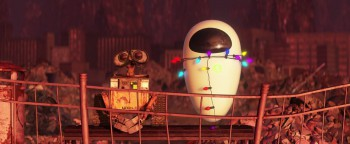
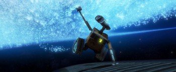

FYC://WALL·E (2008) [2160p] [4K] [BluRay] [7.1] [YTS] [YIFY]
=-=-=-=-=-=-=-=-=-=-=-=-=-=-=-=-=-=-=

Home
Download/Stream:
Magnet
Torrent
Play now (Stream)
Descption:
YTS.MX: YIFY Movies (the only official YIFY site) at
https://yts.mx/
WALL·E (2008) [2160p] [4K] [BluRay] [7.1] [YTS] [YIFY]
In a distant, but not so unrealistic, future where mankind has abandoned earth because it has become covered with trash from products sold by the powerful multi-national Buy N Large corporation, WALL-E, a garbage collecting robot has been left to clean up the mess. Mesmerized with trinkets of Earth's history and show tunes, WALL-E is alone on Earth except for a sprightly pet cockroach. One day, EVE, a sleek (and dangerous) reconnaissance robot, is sent to Earth to find proof that life is once again sustainable. WALL-E falls in love with EVE. WALL-E rescues EVE from a dust storm and shows her a living plant he found amongst the rubble. Consistent with her "directive", EVE takes the plant and automatically enters a deactivated state except for a blinking green beacon. WALL-E, doesn't understand what has happened to his new friend, but, true to his love, he protects her from wind, rain, and lightning, even as she is unresponsive. One day a massive ship comes to reclaim EVE, but WALL-E, ...
https://yts.mx/movie/wall-e-2008
* The following are 720p quality thumbs just as exemplification*

